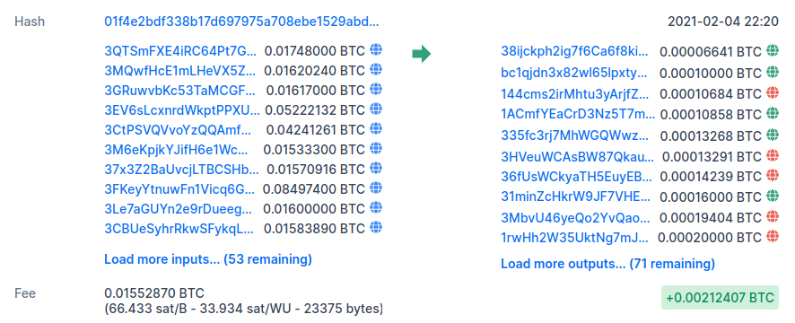
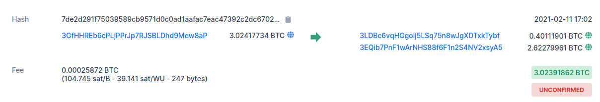
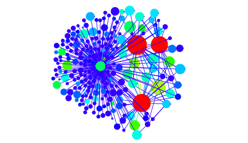

Bitcoin
EIn Blick hinter die Kulissen
Artiom Blionovas, Marten Budelmann
Created: 2021-02-11 Do 18:55
Table of Contents
Realisierung
- Nutzung der REST APIs von:
- blockchain.info
- mempool.space
- walletexplorer.com
Cashflow Analyse
- Nutzung von Bitcoin für illegale Zwecke
- seit 2018 ca. 210.000 gemeldete Adressen auf bitcoinabuse.com
Figure 1: Nutzung für illegale Zwecke
Aufbau einer Transaktion
- eine Transaktion ist eine n:m Beziehung bei Input- zu Outputadressen

Figure 2: Beispiel einer Transaktion
Wiederverwendung von Adressen
- Adressen möglichst nicht wiederverwenden ("bitcoin invoice" anstatt "bitcoin address")
- Verwendung von Deterministischen Wallets mit Seed Phrase
Change Adressen

Figure 3: Change Adressen
Verfolgen des Geldflusses
Some linking is still unavoidable with multi-input transactions, which necessarily reveal that their inputs were owned by the same owner. (Nakamoto 2008)

Figure 4: Change Adressen
Beispiel
Live Demo
Transaction Fees
Vorhersage der Fee per Byte
- für jede Transaktion Kosten pro Byte berechnen
- Median und Interquartilsabstand berechnen
- Approximation mit Linearer Regression
Zusammenhang zwischen Größe und Kosten einer Transaktion
- Unterteilung der letzten 50 Blöcke in Kategorien
Probleme
- Statuscode 429
- Frontend
Ausblick
- Blockchain herunterladen
- Bigdata
- Deterministische Wallets
Geldfluss Analyse

Figure 5: Anonymitäts Analyse von Reid und Harrigan, 2012
- Chainalysis: Unternehmen, welches sich auf die Bitcoin Analyse spezialisiert hat
Transaction Fees
Figure 6: Meldung tagesschau